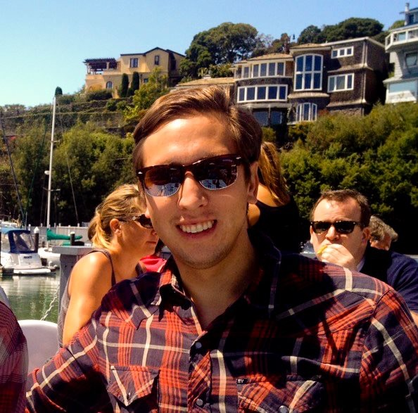

Adam studies at Northwestern University Kellogg School of Management. Drawing from his background in consumer product innovation and high tech product marketing, Adam will be transitioning into technology product management after graduation. In his free time, you can find Adam traveling, surfing, or attending concerts.
| Date | Institution | Position |
|---|---|---|
| September 2014 - Present | Kellogg School of Management | MBA Candidate, Class of 2016 |
| Summer 2015 | Box, Inc. | Product Marketing MBA Intern |
| 2012 - 2014 | The Clorox Company | Innovation Project Manager |